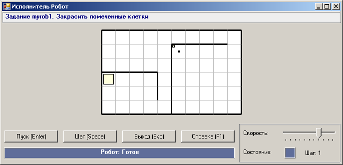
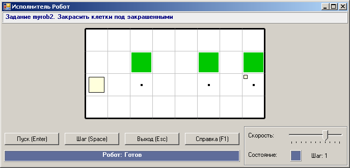
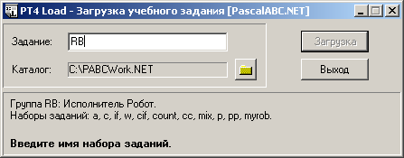
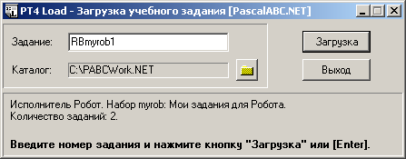

DMTasks созданная нами группа была автоматически зарегистрирована
в мастере по созданию программ-заготовок PT4Load.
Если теперь нажать кнопку RB в поле «Задание», то окно примет следующий вид:
Опишем последовательность создания группы заданий для исполнителя Робот. Создадим модуль RobTasks.pas со следующим текстом:
unit RobTasks;
interface
uses RobotTaskMaker;
implementation
procedure FirstRob;
begin
TaskText('Задание myrob1. Закрасить помеченные клетки');
Field(10,6);
HorizontalWall(0,3,4);
VerticalWall(4,3,2);
RobotBegin(1,4);
VerticalWall(5,1,5);
HorizontalWall(5,1,4);
RobotEnd(6,2);
Tag(6,2);
end;
begin
RegisterGroup('myrob','Мои задания для Робота','RobTasks',2);
RegisterTask('myrob1',FirstRob);
end.
Наберем и запустим основную программу (сохранять ее в каком-либо файле не требуется):
uses Robot, RobTasks;
begin
Task('myrob1');
end.
Будет выведено следующее задание для Робота:

Добавим задание, в котором конфигурация поля случайна:
procedure SecondRob;
var n,i: integer;
begin
TaskText('Задание myrob2. Закрасить клетки под закрашенными');
n:=Random(4)+7;
Field(n,4);
RobotBeginEnd(1,3,n,3);
MarkPainted(n,2);
Tag(n,3);
for i:=2 to n-1 do
if Random(3)=1 then
begin
MarkPainted(i,2);
Tag(i,3);
end;
end;
Добавим вызов процедуры регистрации для данного задания; в результате секция инициализации примет следующий вид:
begin
RegisterGroup('myrob','Мои задания для Робота','RobTasks',2);
RegisterTask('myrob1',FirstRob);
RegisterTask('myrob2',SecondRob);
end.
Изменим основную программу:
uses Robot, RobTasks;
begin
Task('myrob2');
end.
При запуске этой программы в окне исполнителя Робот будет выведено новое задание:

При первом запуске программы с подключенным модулем DMTasks созданная нами группа была автоматически зарегистрирована
в мастере по созданию программ-заготовок PT4Load.
Если теперь нажать кнопку  и в появившемся окне
PT4Load ввести префикс
и в появившемся окне
PT4Load ввести префикс
RB в поле «Задание», то окно примет следующий вид:

Мы видим, что группа заданий myrob появилась в списке доступных групп для исполнителя Робот. Наберем имя задания
myrob1:

После нажатия Enter в рабочем каталоге будет создан новый файл RBmyrob1.pas со следующим содержимым:
uses Robot, RobTasks;
begin
Task('myrob1');
end.
Можно приступать к решению собственноручно разработанной задачи :)